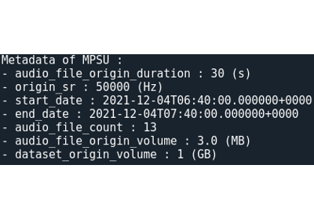

Getting started
Quick installation
Sample datasets
Basic use cases
Build and analyze an OSmOSE dataset
Generate spectrograms
Join with auxiliary
Build and analyze an OSmOSE dataset
Generate spectrograms
Join with auxiliary
Tutorials
Going further
On Datarmor
Glossary
API Documentation
OSmOSE toolkit
Getting started
Build and analyze an OSmOSE dataset
View page source
Build and analyze an OSmOSE dataset
¶

Build a OSmOSE dataset
Build a OSmOSE dataset
Explore dataset metadata
Explore dataset metadata